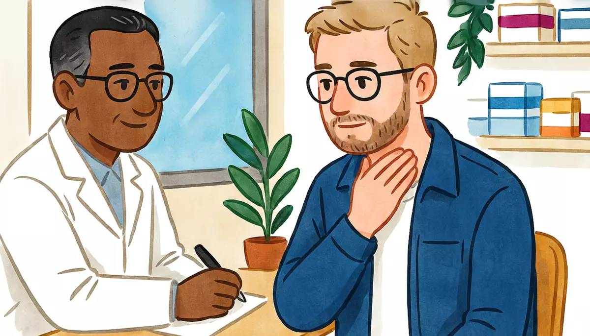

I can describe symptoms at a pharmacy or a doctor's office.Goal of this lesson · CEFR Obtaining goods and services A2+; Information exchange A2+
Paso 1 de 8
EscuchaListen
Listen to the conversation, then answer the questions.

Tuesday, 1 December, 6 p.m. Alex has felt sick since yesterday. He goes to the doctor's office next to the pharmacy on his street, where Dr. Méndez sees patients in the afternoons. usted (Alex with Dr. Méndez and with the pharmacist)
First listen without the text. Press Escuchar todo and answer the first question. Then show the Spanish text and listen again.
ChooseWhat's wrong with Alex, according to the doctor?
Your answer:
M
Dr. MéndezBuenas tardes. Pase, siéntese, por favor. ¿Qué le pasa?Good afternoon. Come in, sit down, please. What's the matter?
A
AlexBuenas tardes, doctor. Me siento muy mal. Me duele mucho la garganta y tengo fiebre.Good afternoon, doctor. I feel really bad. My throat hurts a lot and I have a fever.
M
Dr. Méndez¿Desde cuándo se siente así?Since when have you felt like this?
A
AlexDesde ayer. Empecé a sentirme mal ayer en la tarde, en el trabajo.Since yesterday. I started to feel bad yesterday afternoon, at work.
M
Dr. Méndez¿Cuánta fiebre tiene? ¿Y tiene tos?How high is your fever? And do you have a cough?
A
AlexAnoche tuve treinta y ocho y medio. Y sí, tengo un poco de tos. También me duele la cabeza.Last night I had thirty-eight and a half. And yes, I have a bit of a cough. My head hurts too.
M
Dr. MéndezA ver, abra la boca y diga «aaa»… Sí, tiene la garganta muy roja.Let's see, open your mouth and say "aah"… Yes, your throat is very red.
M
Dr. MéndezEs una infección de garganta, probablemente por un virus. Hay mucha gripa en estos días.It's a throat infection, probably from a virus. There's a lot of flu going around these days.
A
Alex¿Necesito un antibiótico?Do I need an antibiotic?
M
Dr. MéndezNo, por ahora no. Los antibióticos no sirven para los virus. Le voy a dar paracetamol para la fiebre y el dolor: una pastilla cada ocho horas.No, not for now. Antibiotics don't work against viruses. I'm going to give you paracetamol for the fever and the pain: one tablet every eight hours.
A
Alex¿Y qué más tengo que hacer?And what else do I have to do?
M
Dr. MéndezDebe descansar y tomar muchos líquidos: agua, té, caldo de pollo. Y mañana no debe ir a trabajar.You should rest and drink plenty of fluids: water, tea, chicken soup. And tomorrow you shouldn't go to work.
A
AlexPero mañana tengo tres clases…But tomorrow I have three classes…
M
Dr. MéndezPues tiene que avisar a su escuela. Y si la fiebre pasa de treinta y nueve, si le cuesta trabajo respirar o si en tres días no está mejor, regrese o vaya a urgencias, ¿eh?Well, you have to let your school know. And if your fever goes over thirty-nine, if you find it hard to breathe, or if you're not better in three days, come back or go to the emergency room, OK?
A
AlexMuy bien. Muchas gracias, doctor. ¿Cuánto le debo?Very good. Thank you very much, doctor. How much do I owe you?
M
Dr. MéndezSon sesenta pesos; se pagan en la caja de la farmacia. ¡Que se mejore!That's sixty pesos; you pay at the pharmacy checkout. Get well soon!
1
ChooseListen again and answer.
When did Alex start to feel bad?
Why doesn't the doctor give Alex an antibiotic?
What should Alex do tomorrow?
When should Alex come back or go to the emergency room?
Escena 2: At the pharmacy counter
Five minutes later, Alex takes his prescription to the pharmacy next door.
F
La farmacéuticaBuenas tardes. ¿Me permite su receta?Good afternoon. May I have your prescription?
A
AlexSí, aquí tiene. Y también necesito algo para la garganta, por favor.Yes, here you are. And I also need something for my throat, please.
F
La farmacéuticaTenemos estas pastillas de miel y limón. Cuestan ochenta y cinco pesos.We have these honey and lemon lozenges. They cost eighty-five pesos.
A
AlexMuy bien. Y el paracetamol, ¿cada cuánto lo tomo?Very good. And the paracetamol, how often do I take it?
F
La farmacéuticaUna pastilla cada ocho horas, después de comer algo. No tome más de tres al día.One tablet every eight hours, after eating something. Don't take more than three a day.
A
AlexPerfecto. ¿Cuánto es todo, con la consulta?Perfect. How much is everything, with the consultation?
F
La farmacéuticaSesenta de la consulta, cuarenta y dos del paracetamol y ochenta y cinco de las pastillas: ciento ochenta y siete pesos.Sixty for the consultation, forty-two for the paracetamol and eighty-five for the lozenges: a hundred and eighty-seven pesos.
A
AlexAquí tiene: doscientos.Here you are: two hundred.
F
La farmacéuticaTrece de cambio. Tómese un té con miel y descanse mucho. ¡Que se mejore!Thirteen in change. Have a tea with honey and get plenty of rest. Get well soon!
1
ChooseAnswer the questions: Escena 2: At the pharmacy counter
How often should Alex take the paracetamol?
How much does Alex pay in total?
Paso 2 de 8
FíjateNotice
Read how it works. Play the examples and repeat them aloud.
What hurts? Doler works like gustar
Doler (to hurt) works like gustar: the thing that hurts is the subject. One thing → me duele; more than one → me duelen. Use te for tú and le for usted, él or ella: ¿Le duele aquí? With body parts, Spanish uses el, la, los, las, not mi: me duele la cabeza, not me duele mi cabeza.
one thing
more than one
me duele la cabeza
me duelen los pies
me duele la garganta
me duelen los ojos
me duele el estómago
me duelen las piernas
te duele la espalda
le duelen los oídos
From the conversation:
Buenas tardes, doctor. Me siento muy mal. Me duele mucho la garganta y tengo fiebre.Good afternoon, doctor. I feel really bad. My throat hurts a lot and I have a fever.
Anoche tuve treinta y ocho y medio. Y sí, tengo un poco de tos. También me duele la cabeza.Last night I had thirty-eight and a half. And yes, I have a bit of a cough. My head hurts too.
Ayer caminé todo el día. Hoy me duelen los pies.Yesterday I walked all day. Today my feet hurt.
Symptoms: tener fiebre, tos, gripa
Many symptoms use tener: tengo fiebre (a fever), tengo tos (a cough), tengo gripa (a cold or the flu: Mexico says gripa), tengo dolor de cabeza / de estómago (a headache, stomachache), tengo náuseas. To say how you feel: me siento mal (I feel bad), me siento mejor (I feel better), estoy enfermo / enferma (I'm sick). Temperature is in degrees Celsius: treinta y ocho y medio = 38.5 °C.
From the conversation:
¿Cuánta fiebre tiene? ¿Y tiene tos?How high is your fever? And do you have a cough?
Es una infección de garganta, probablemente por un virus. Hay mucha gripa en estos días.It's a throat infection, probably from a virus. There's a lot of flu going around these days.
In Mexico a doctor or pharmacist will often ask ¿Qué le pasa? or ¿Qué tiene? (What's wrong?). And when you leave, they say ¡Que se mejore! (Get well soon!). To a friend: ¡Que te mejores!
Since when? ¿Desde cuándo?
To say how long a problem has lasted, use the present + desde: me siento mal desde ayer, tengo tos desde el lunes. With an amount of time, use desde hace: desde hace dos días (for two days). To say when it started, use the preterite + hace: empecé a sentirme mal hace dos días (two days ago). Use the preterite, too, for what you did: comí en la calle, anoche tuve fiebre.
Spanish
English
Tengo tos desde el lunes.
I've had a cough since Monday.
Me duele desde hace dos días.
It's hurt for two days.
Empecé a sentirme mal hace dos días.
I started to feel bad two days ago.
From the conversation:
¿Desde cuándo se siente así?Since when have you felt like this?
Desde ayer. Empecé a sentirme mal ayer en la tarde, en el trabajo.Since yesterday. I started to feel bad yesterday afternoon, at work.
English says "I've had…", but Spanish uses the present here: Tengo fiebre desde ayer, not a past tense.
Advice: tener que and deber + infinitive
You know tener que + infinitivo (to have to). A new Andamio structure: deber + infinitivo = should, ought to. It's a regular -er verb: debo, debes, debe, debemos, deben. Tener que is stronger (it's necessary); deber is advice. For "shouldn't", put no first: no debe ir a trabajar.
From the conversation:
¿Y qué más tengo que hacer?And what else do I have to do?
Debe descansar y tomar muchos líquidos: agua, té, caldo de pollo. Y mañana no debe ir a trabajar.You should rest and drink plenty of fluids: water, tea, chicken soup. And tomorrow you shouldn't go to work.
Paso 3 de 8
PracticaPractice
Do the exercises in order. They get freer as you go.
1
ChooseDuele or duelen? Choose.
Me ___ la cabeza.
Ayer corrí diez kilómetros y hoy me ___ las piernas.
A Mariana le ___ el estómago.
¿Te ___ los ojos?
Doctor, me duele ___ espalda.
2
Type the missing wordsTell the doctor. Complete the sentences.
a sentirme mal el martes. (empezar, yo)
I started to feel bad on Tuesday.
Anoche fiebre. (tener, yo)
Last night I had a fever.
Ayer tacos en un puesto de la calle. (comer, yo)
Yesterday I ate tacos at a street stall.
Tengo tos el lunes.
I've had a cough since Monday.
Me duele la garganta desde tres días.
My throat has hurt for three days.
Usted tomar mucha agua. (deber)
You should drink a lot of water.
No comer picante esta semana. (deber, tú)
You shouldn't eat spicy food this week.
3
Listen and chooseWhat's wrong? Listen and choose.
What's wrong with Diego?
Show what they say
Diego: Ayer jugué futbol tres horas y hoy me duelen mucho las piernas.
Since when has Rocío had a cold?
Show what they say
Rocío: Tengo gripa desde el domingo. Mateo me la pegó.
What's Doña Lupita's problem?
Show what they say
Doña Lupita: Me duele el estómago desde hace dos días. Creo que algo me cayó mal.
How should the patient take the medicine?
Show what they say
Dr. Méndez: Tome una pastilla cada doce horas, durante cinco días.
4
Put the words in orderPut the words in order.
Since when have you felt like this?
My throat has hurt since yesterday.
You should drink plenty of fluids.
5
Say it in SpanishNow you, at the doctor's. Say it in Spanish (or type it).
Say you feel really bad.
Me siento muy mal.
Say your head hurts and you have a fever.
Me duele la cabeza y tengo fiebre.
Say your feet hurt.
Me duelen los pies.
Say you've had a cough since Monday.
Tengo tos desde el lunes.
Say you started to feel bad two days ago.
Empecé a sentirme mal hace dos días.
Ask how often you take it (the medicine). (To the pharmacist: use usted with him, but the verb is about you: lo tomo.)
¿Cada cuánto lo tomo?
Tell a friend he should rest.
Debes descansar.
6
Your own sentencesAt the doctor's.
Imagine you're sick. Write 4–5 sentences to tell the doctor: how you feel, what hurts, other symptoms, since when, and something you did or ate (preterite). Then write one piece of advice the doctor gives you with debe or tiene que.
Show a model answer
Me siento mal desde el sábado. Me duele el estómago y tengo un poco de fiebre. El viernes en la noche comí unos tacos en la calle. Ayer no comí nada. Doctor: «Debe tomar mucha agua y comer ligero. Si no está mejor en dos días, tiene que regresar.»
Check your answer:
Paso 4 de 8
PalabrasWords
Listen to each word and repeat it. Then do the quick check.
On the pharmacy counter there's a free leaflet for the cold and flu season. Read it.
Pharmacy leaflet
Temporada de gripa: cinco consejos
En noviembre empieza el frío y llegan las infecciones respiratoriasrespiratory infections: gripa, tos, dolor de garganta. ¿Qué debe hacer?
1. Descanse. Si tiene fiebre, no vaya a trabajar ni a la escuela. Así no contagiainfect a otras personas.
2. Tome muchos líquidos: agua, té, caldo de pollo. Un té de manzanilla o de limón con miel ayuda con el dolor de garganta.
3. No tome antibióticos sin receta. La mayoría de las gripas son virus, y los antibióticos no sirven para los virus. En México, los antibióticos solo se venden con receta médica.
4. Lávese las manos con agua y jabón muchas veces al día, y tápese la bocacover your mouth con el brazo cuando tosa.
5. Vaya al médico si tiene fiebre de más de tres días, si le cuesta trabajo respirar o si tiene un dolor muy fuerte. Los niños pequeños y las personas mayores deben ir al médico pronto. En una emergencia, llame al 911.
¿Dudas? Pase al consultorio: lo atendemos sin cita.
Words with a dotted underline have a translation: tap or hover.
1
ChooseAnswer the questions about the text.
Why shouldn't you go to work with a fever?
What does the leaflet say about antibiotics?
When should you see a doctor?
Paso 6 de 8
CulturaCulture
Read about the culture behind the language.
The doctor next to the pharmacy
Walk down almost any street in Mexico City and you'll find a pharmacy with a small consultorio next door: a doctor's office where a general practitioner sees patients without an appointment (sin cita) for a low fee, often well under 100 pesos (prices vary by chain and branch). These offices, called consultorios adyacentes a farmacias, spread quickly after 2010, when Mexico began to enforce the rule that antibiotics can only be sold with a prescription (receta médica): the pharmacy keeps its prescription sales, and the patient gets a quick, cheap consultation.
The best-known chain is Farmacias Similares, founded in 1997 by Víctor González Torres to sell low-cost generic medicines. Its mascot, Dr. Simi, a cheerful white-haired doctor with a mustache, dances outside many branches; Dr. Simi plush toys are so popular that fans throw them onto the stage at concerts.
Many families also have their home remedies (remedios caseros): té de manzanilla (chamomile tea) for an upset stomach, tea with lemon and honey for a sore throat, and caldo de pollo (chicken soup) for almost everything. They're comforting for mild symptoms, but they don't replace a doctor. For a high fever, trouble breathing, chest pain or any emergency, go to a hospital or call 911, Mexico's national emergency number.
Elsewhere: The word for a cold changes across the Spanish-speaking world: gripa in Mexico and Colombia, gripe in Spain and much of South America, resfriado or resfrío for a mild cold in many countries, and catarro in Spain and parts of Latin America.
Sources
Secretaría de Salud / COFEPRIS: Acuerdo por el que se determinan los lineamientos a los que estará sujeta la venta y dispensación de antibióticos, Diario Oficial de la Federación, 27 May 2010.
Expansión, «Doctor Simi: la historia de Farmacias Similares», 17 August 2022 (founded 1997 by Víctor González Torres; consultorios next to its branches).
Real Academia Española, Diccionario de la lengua española: «gripa» (Colombia, Mexico) = gripe; Secretariado Ejecutivo del Sistema Nacional de Seguridad Pública: 911, national emergency number.
1
ChooseCheck: what did you learn?
Since 2010, in Mexico antibiotics…
Who is Dr. Simi?
Paso 7 de 8
Tu turnoYour turn
Now use it: do the role play, then write.
Role play: At the doctor's office
You've felt sick for two days. Go to the consultorio next to the pharmacy and explain your symptoms to the doctor. Answer the questions, ask what you have to do, and ask how much it is. Use usted.
You
Greet the doctor and say how you feel.
Say what hurts (me duele / me duelen) and other symptoms (tengo fiebre, tos…).
Say since when, and when it started (desde…, empecé a…).
Answer the doctor's questions (what you ate, your temperature…).
Ask what you have to do, how often to take the medicine, and how much it is.
Dr. Méndez
Asks: ¿Qué le pasa?
Asks: ¿Desde cuándo? and about fever.
Examines you and explains the problem.
Gives advice with debe… and tiene que….
Says when to come back.
1. Listen to a model
One way the conversation could go. Listen, then try it yourself without looking.
M
Dr. MéndezBuenas tardes. ¿Qué le pasa?Good afternoon. What's the matter?
A
AlexBuenas tardes, doctor. Me siento mal. Me duele el estómago y tengo un poco de fiebre.Good afternoon, doctor. I feel bad. My stomach hurts and I have a slight fever.
M
Dr. Méndez¿Desde cuándo?Since when?
A
AlexDesde ayer en la noche. Empecé a sentirme mal después de cenar.Since last night. I started to feel bad after dinner.
M
Dr. Méndez¿Y qué cenó?And what did you have for dinner?
A
AlexComí unos tamales en un puesto de la calle.I ate some tamales at a street stall.
M
Dr. MéndezYa veo. Algo le cayó mal. Debe tomar mucho líquido y comer ligero: caldo de pollo, arroz.I see. Something disagreed with you. You should drink lots of fluids and eat light: chicken soup, rice.
A
Alex¿Tengo que tomar alguna medicina?Do I have to take any medicine?
M
Dr. MéndezUn suero oral, poco a poco, todo el día. Si en dos días no está mejor, regrese.Oral rehydration salts, little by little, all day. If you're not better in two days, come back.
A
AlexMuy bien. Muchas gracias, doctor. ¿Cuánto le debo?Very good. Thank you very much, doctor. How much do I owe you?
2. Record yourself
Say your part aloud (pause the model after each of Dr. Méndez's lines), or answer the questions in the role card. Then play it back and compare.
3. Practice with an AI partner (optional)
Copy this prompt into ChatGPT or Claude, switch on voice mode, and have the conversation. It plays Dr. Méndez.
Stuck? Say «ayuda» and it gives you a hint in English, then carries on.
Finished? Say «terminamos» and it gives you feedback in English: what you did well, your mistakes, and useful phrases for next time.
Let's practice Spanish (Mexican Spanish, level A2). You are Dr. Arturo Méndez, 52, a kind, calm general practitioner from Mérida who sees patients in the consultorio next to a pharmacy in Narvarte, Mexico City. Use "usted".
I come in feeling sick. The consultation costs 60 pesos, paid at the pharmacy checkout. Your advice must be sensible and safe: no antibiotics for a simple viral cold; rest, fluids, paracetamol for fever; and always tell me when to come back or go to the emergency room (high fever, trouble breathing, strong pain, no improvement in 2–3 days).
Rules:
- Speak only Spanish, short turns (1-2 sentences), simple language for an A2 learner.
- Ask what's wrong, since when, whether I have a fever, a cough or other symptoms, and what I ate or did yesterday. Then give me a simple diagnosis and two or three pieces of advice with "debe" and "tiene que". Use simple A2 Spanish and one question at a time.
- You play only this one person. Never speak as anyone else, and don't describe what other people say or do.
- If I make a mistake, don't stop me: repeat what I said correctly in your answer (for example: if I say "Me duele mi cabeza desde dos días", you say "Ah, le duele la cabeza desde hace dos días. ¿Y tiene fiebre?").
- Ask me a question I must answer in the preterite: "¿Qué comió ayer?" or "¿Cuándo empezó a sentirse mal?"
- When I say "ayuda", step out of the role play for a moment: in English, give me a short hint about what I could say next, with one or two short Spanish options, then continue the role play where we were.
- When I say "terminamos", stop the role play and give me feedback in English: 3 things I did well, up to 3 mistakes with corrections, and 3 useful phrases for next time.
Start now: say "Buenas tardes, pase, siéntese. Cuénteme, ¿qué le pasa?"
Writing: I can't come to work
You're sick and can't go to work or class tomorrow. Write a message to your boss or teacher: say how you feel and what hurts, since when, what the doctor said you should do, and apologize.
60–90 words.
Show a model answer
Hola, Rocío:
Te escribo porque estoy enfermo. Me duele mucho la garganta y tengo fiebre desde ayer. Empecé a sentirme mal ayer en la tarde, en la escuela. Hoy fui al doctor: tengo una infección de garganta por un virus. Tengo que descansar y tomar muchos líquidos, y mañana no debo ir a trabajar. Lo siento mucho. Mis clases de mañana están en la carpeta de la sala de maestros.
Saludos,
Alex
Check your text:
Paso 8 de 8
¿Lo logré?Did I do it?
Check yourself against the goal of the lesson.
Read each statement and be honest: anything marked casi or todavía no goes into Repaso so it comes back soon.
I can say what hurts with me duele / me duelen.
I can describe my symptoms: tengo fiebre, tos, gripa.
I can say since when I've felt sick and what I did, in the preterite.
I can understand a doctor's or pharmacist's advice: debe…, tiene que…, cada ocho horas.
I can buy medicine at a pharmacy and ask how to take it.